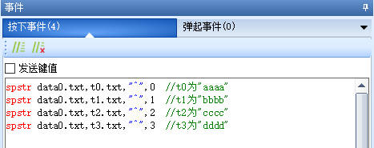
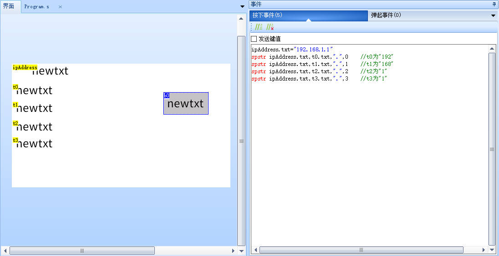
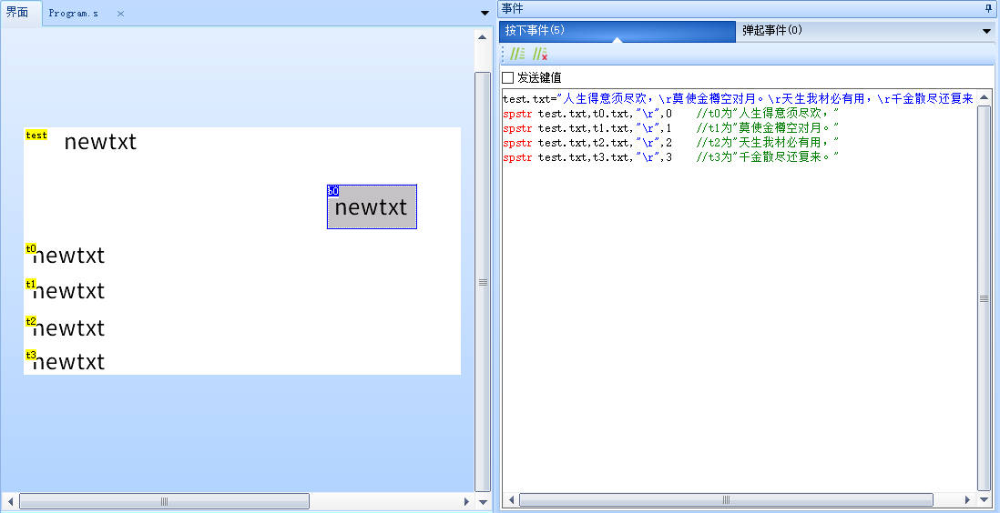

spstr-字符串分割
spstr src,dec,key,index
src:源变量(必须是字符串变量)
dec:目标变量(必须是字符串变量)
key:分隔符字符串(必须是字符串变量)
index:取第几份(在src字符串中用key字符串做分割后，取第index份字符内容赋值给dec变量)
spstr-示例1
data0控件为数据记录控件
data0.txt的字符内容为:aaaa^bbbb^cccc^dddd
spstr data0.txt,t0.txt,"^",0 //以^为分隔符,截取第0个,t0为"aaaa"
spstr data0.txt,t1.txt,"^",1 //以^为分隔符,截取第1个,t1为"bbbb"
spstr data0.txt,t2.txt,"^",2 //以^为分隔符,截取第2个,t2为"cccc"
spstr data0.txt,t3.txt,"^",3 //以^为分隔符,截取第3个,t3为"dddd"

spstr-示例2
ipAddress.txt的字符内容为:192.168.1.1
ipAddress.txt="192.168.1.1"
spstr ipAddress.txt,t0.txt,".",0 //以.为分隔符,截取第0个,t0为"192"
spstr ipAddress.txt,t1.txt,".",1 //以.为分隔符,截取第1个,t1为"168"
spstr ipAddress.txt,t2.txt,".",2 //以.为分隔符,截取第2个,t2为"1"
spstr ipAddress.txt,t3.txt,".",3 //以.为分隔符,截取第3个,t3为"1"

spstr-示例:截取换行符
test.txt的字符内容为:
人生得意须尽欢，
莫使金樽空对月。
天生我材必有用，
千金散尽还复来。
// \r在串口屏中代表回车换行的意思
test.txt="人生得意须尽欢，\r莫使金樽空对月。\r天生我材必有用，\r千金散尽还复来。"
spstr test.txt,t0.txt,"\r",0 //以\r为分隔符,截取第0个,t0为"人生得意须尽欢，"
spstr test.txt,t1.txt,"\r",1 //以\r为分隔符,截取第1个,t1为"莫使金樽空对月。"
spstr test.txt,t2.txt,"\r",2 //以\r为分隔符,截取第2个,t2为"天生我材必有用，"
spstr test.txt,t3.txt,"\r",3 //以\r为分隔符,截取第3个,t3为"千金散尽还复来。"

spstr-示例:获取名人名言左右两边的数据
test.txt="出淤泥而不染，濯清涟而不妖。——周敦颐"
spstr test.txt,t0.txt,"。——",0 //以"。——"为分隔符,截取左边的数据,t0为 出淤泥而不染，濯清涟而不妖
spstr test.txt,t1.txt,"。——",1 //以"。——"为分隔符,截取右边的数据,t0为 周敦颐
spstr-示例:截取冒号和句号之间的数据
test.txt="周敦颐：出淤泥而不染，濯清涟而不妖。"
spstr test.txt,temp_str.txt,"：",1 //以冒号为分隔符,截取冒号右边的数据 出淤泥而不染，濯清涟而不妖。
spstr temp_str.txt,t0.txt,"。",0 //以句号为分隔符,截取句号左边的数据,t0为 出淤泥而不染，濯清涟而不妖
spstr-示例:分割浮点数
spstr test.txt,t0.txt,".",0 //以.为分隔符,截取第0个,t0为整数部分
spstr test.txt,t1.txt,".",1 //以.为分隔符,截取第1个,t1为小数部分
spstr-示例:解析json格式
{
"name": "test",
"Info": {
"age": 16,
"pass": false
}
}
在实际传输时，json会被压缩为以下格式（被压缩为1行，不带换行和缩进等）
{"name":"test","Info":{"age":16,"pass":false}}
如何提取到name属性(字符串属性)
以 "name":" 为分隔符，获取到右边部分 test","Info":{"age":16,"pass":false}}
再以 " 为分隔符，获取到左边部分的属性 test
如何提取到``age``属性(数值属性)
以 "age": 为分隔符，获取到右边部分 16,"pass":false}}
再以 , 为分隔符，获取到左边部分的属性 16
如何提取到 age 属性(布尔值属性)
设置一个文本控件tBool，txt_maxl长度为4
以 "pass": 为分隔符，获取到右边部分将值放入tBool，因为tBool的txt_maxl长度为4，所以会截取到前4字节 fals 或者 true
由于json通常只在串口传输中使用，一般是在主动解析模式下使用，需要的请参考下面的主动解析教程链接。 接收json数据字符串
spstr指令-样例工程下载
演示工程下载链接：